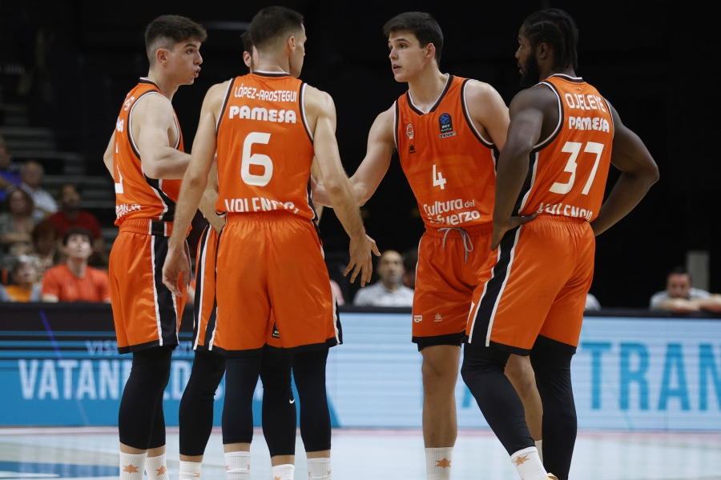

València Bàsquet
València Bàsquet
El Roig Arena apuesta fuerte por la Copa del Rey
El Roig Arena de Valencia se prepara para la Copa del Rey.
El Roig Arena de Valencia se prepara para albergar la Copa del Rey, comenzando en 2026.
Leer más

Raquel Carrera: cuenta atrás para reaparecer
Raquel Carrera se prepara para volver
Raquel Carrera se prepara para volver al baloncesto tras una lesión.
Leer más
Un triple de Harding remata a un sorprendido Valencia
El Andorra vence al Valencia Basket
El Andorra vence al Valencia Basket 86-84 con un triple final de Harding.
Leer más